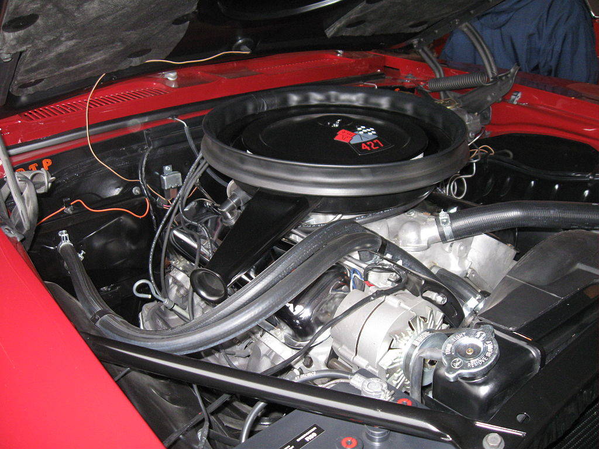

The first generation Camaro SS was available with a variety
of engines, including the 350 cubic inch V8, the 396 cubic inch
V8, and the 427 cubic inch V8. The most powerful engine option
was the 427, which was rated at 425 horsepower and 460 lb-ft of
torque. The Camaro SS also featured performance upgrades such
as heavy-duty suspension, power-assisted disc brakes, and a
limited-slip differential.

The Camaro SS was a popular option for both street and
track use, and it was a formidable competitor on the drag
strip and road courses. The first-generation Camaro SS is
highly sought after by collectors and enthusiasts, and it
remains a beloved icon of the muscle car era.
Wikipdeia link
Back to the main page